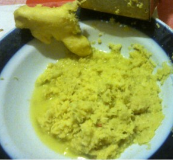
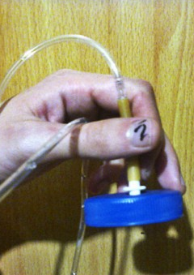
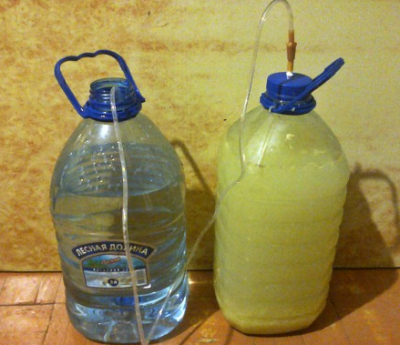
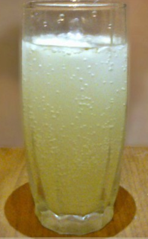

Итак имбирный эль — можно делать по быстрому, а можно правильно. Иногда итак итак хочется.
Мой классический рецепт. Ставлю его в 5литровке — чтоб влезало потом в холодильник.
Ингредиенты:
Первый этап — арт подготовка
Трем имбирь на терке — вот картинка

тебе нужно где то две трети или половина от того что в блюдце, иначе будет остренько (имбирь берем тока свежий!)
Чистим лимоны от кожуры и давим сок.
Этап второй — разведка боем
Сахар растворяем в 5 литрах кипяченой воды (тут самый важный ключевой момент — температура воды должна быть тепленькая 40–45 градусов, будем если горячая — хана дрожжам — умрут и скиснут, а если сильно холодная — не схватятся. Воду удобно измерять градусником простым). Сюда же сок из лимонов и имбирь натертый — все качественно перемешиваем. Добавляем чайную ложку наших дрожжей и снова перемешиваем
Этап третий — закрепление позиций
Если есть капельница делаешь вот такую штуку

в крышку вставляешь отрезанный кончик и все это гидроизолируешь, в идеале вот что получается

Главные моменты — чтобы воздух проходил сквозь шланг. Ставь куданть в темное сухое теплое место. Поглядывай чтобы выходили пузырики — значит бродит. Если не хочешь морочиться — можешь надеть перчатку обмотать изолентой — перчатка надуется — значит все ок.
Через два дня можешь байду снимать (если хочется скорее выпить). Но я бы осадил — и подождал дня 4. Дальше ключевой момент — смотришь чтобы в бутылке было 5 см сверху места. Закрываешь плотно и убираешь в холодильник на 2–3 дня.
Идеальный эль — недельный, но можно и трехдневный. 4 дня он бродит. Потом еще 2–3 дня в холодильнике бродит.
Все цедим, получаем вот такую нямку

приятного аппетита
ps Если хотим пивной вариант — делаем трехсуточный по схеме 2+1 (2 дня на воле, 1 в холоде). это получается 4–7 градусов оборота. Но я люблю позабористее — недельный по схеме 4+2\3. Тогда он около 10–13 градусов, по вкусу такая же нямка, а пузыриков больше — прибирает отлично.
Приятного зельеварения!